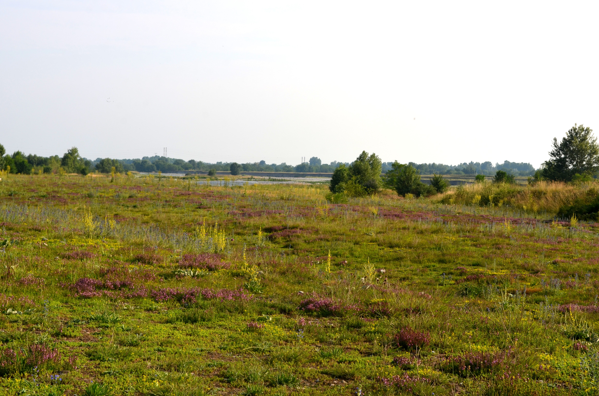

Landscape ecology and plant invasions in the dry grasslands of the Maplaga-Basella Reserve (Serio River, Italy)
Investigated changes in land use and river dynamics through time and estimated non-native plant species distributions to identify threats to the dry grasslands of the Malpaga-Basella reserve, ecosystems of high naturalistic value.

In progress 🚧 TODO - Confront mappa storica - Diagram - photo with invasion by Ailanthus
Goals
(1) Investigated changes in land use and river dynamics through time in relation to the dry grasslands of the Malpaga-Basella reserve, protected under the habitat directive.
(2) Identify the main threats to the xeric grasslands, focusing on non-native plant species